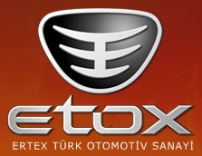
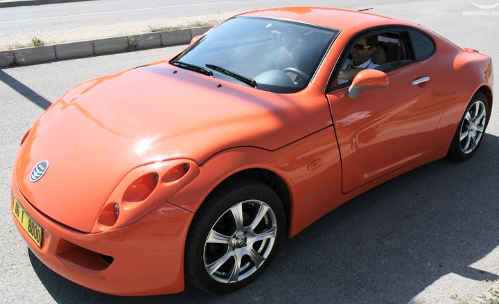
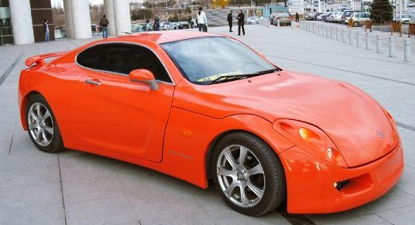
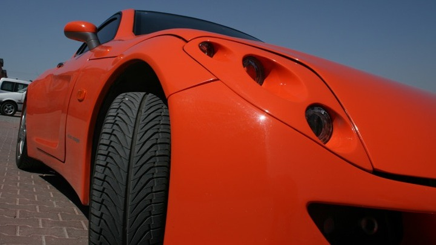

|
Yurt dýþýndaki otomobil fuarlarýnda herkesin lüks spor otomobilleri incelemesine izin verilirken, Türkiye'deki otomobil fuarlarýnda belirli kiþiler dýþýnda kimsenin bu otomobillere yaklaþtýrýlmamasýný içerleyen bir giriþimci yerli spor otomobil üretti..
Ertex Oto Dekorasyon Genel Müdürü Ercan Malkoç, iþi gereði sýk sýk yurt dýþýndaki otomobil fuarlarýna katýldýðýný, buralarda her isteyenin rahatlýkla lüks spor otomobilleri inceleyebildiðini anlattý. Türkiye'de düzenlenen otomobil fuarlarýnda ise bu otomobillerin çevresine bant çekildiðini, ünlü ve zenginlerin dýþýnda kimsenin otomobilleri incelemesine izin verilmediðini belirten Malkoç, ''bu duruma çok içerlediðini ve bunun üzerine yerli bir spor otomobil geliþtirmeye karar verdiðini'' söyledi.
Malkoç, ilk otomobilin icadýnýn üzerinden yaklaþýk 100 yýl, ilk Türk otomobili olan Devrim'in yapýlmasýnýn üzerinden de 46 yýl geçtiðini ifade ederek, þöyle konuþtu: ''Ülkemizde 1966 yýlýndan bu yana otomobil üretimi yapýlmaktadýr. Çaðýmýzýn ve özellikle de otomobil sektörünün geliþimi göz önüne alýndýðýnda, dünya otomotiv sektörüne bir marka kazandýrmamýþ olmamýz bizleri çok üzüyordu. Oysa daha 1938 yýlýnda Türkiye, 140 tane avcý bombardýman uçaðý üreterek þu an teknolojilerine imrendiðimiz AB ülkelerine satmýþtýr. 2007 yýlýndayýz ve uçak yapan bir milletin torunlarý olarak bir otomobil yapamýyoruz. Cesaretimizin temelinde bu çok önemli bir etken oldu. Artýk bu konuda bir þeyler yapmamýz gerektiðini düþündük ve Etox'u geliþtirdik.''

Neden spor otomobil?
Spor modellerin firmalarýn vitrinini oluþturduðunu ve her otomobil tutkunlarýnýn spor modellerin sahibi olmayý hayal ettiðini dile getiren Malkoç, bu nedenle spor otomobil geliþtirmeyi tercih ettiklerini kaydetti.
Ýnsanlarýn spor otomobillerin her ayrýntýsýndaki beklentilerinin çok yüksek olduðunu anlatan Malkoç, bu otomobillerin hýzlý gitmesinin, ayný zamanda en kýsa mesafede durmasýnýn istendiðini dile getirdi. Tasarýmdaki beklentilerin de bu yönde olduðunu belirten Malkoç, ''Motordaki performansýn dýþ çizgilere yansýmasý istenir. Bu beklentileri çoðaltmak mümkün. Bu nedenle spor otomobil üretmek zor bir iþtir. Projeye baþlamadan önce insanlar bize 'bunu yapamazsýnýz' diye güldüler. Fakat dünyada zoru baþaran Porche, Ferrari, Lamborghini gibi firmalar var. Bizde iddialý baþlamak istedik. Belki baþlangýçta yýldýzlarý hedef seçtik ama sonunda baþarýlý bir prototip geliþtirdiðimize inanýyoruz. Bu araba çok konuþulacak.'' diye konuþtu.

Projeye baþlarken öncelikle tasarým ekibini oluþturduklarýný belirten Malkoç, tasarýmýn geliþtirilmesinin 6 ay sürdüðünü anlattý. Bu aþamada oldukça zorlandýklarýný ifade eden Malkoç, þunlarý kaydetti: ''Çünkü kendi insanýmýzýn beklentileri doðrultusunda bir tasarým hazýrlamamýz gerekiyordu. Buradaki beklentiler oldukça yüksektir. Hayallerde hep Ferrari ve Porche gibi otomobiller vardýr. Biz onlara benzetmek için yola çýkmadýk. Deyim yerinde ise spor otomobilde bir sýnýf yaratmak için yola çýktýk. Tasarým felsefemizin temelinde 4 kiþilik günlük hayatta kullanýlabilecek bir otomobil üretmek vardý. Hedeflerimizi bu yönde þekillendirdik. Ayný zamanda da tasarýmýmýz performans isteyen kullanýcýlara da hitap edecek görsellikte olmalýydý.
Kiþiye göre aile otomobili, kiþiye göre günlük hayatta kullanýlabilecek spor otomobil, kiþiye göre tam bir performans otomobili. Kýsacasý Etox'a baktýðýnýz açýlardan bu özelliklerin tamamýný görebilirsiniz. Yüze yakýn tasarým eskizimiz arasýnda þu an prototip üretimini yaptýðýmýz modeli
seçtik.''
Seri üretim belgesi aldýlar
Etox'un günümüz otomotiv firmalarýnýn tüm tasarým ve prototip üretimlerini kapsayan süreçleri içinde barýndýran iki yýllýk çalýþmanýn sonucunda geliþtirildiðini ifade eden Malkoç, prototip hazýrlama aþamasýnda tasarým ekibi de dahil 46 Türk personelin görev aldýðýný belirtti. Malkoç, aracýn þasinin yurt dýþýndaki diðer özel üretilen emsallerindeki gibi örme þasi tekniðine dayanarak kendi mühendisleri tarafýndan projelendirildiðini kaydetti.

Malkoç, otomobilin bütün parçalarýný kendilerinin ürettiðini, sadece motorunu Fransa'daki bir firmadan aldýklarýný ifade ederek, ''Bir süre sonra kendi motorumuzu kendimiz üretmeyi hedefliyoruz. Henüz ilk aþamadayýz. Geliþime açýk bir proje bu'' dedi. Etox'un günümüz koþullarýný saðlayabilecek bir donanýma sahip olmasý nedeniyle fren testlerinde uluslararasý geçerliliði olan R 13H testine tabi tutulduðunu belirten Malkoç, test sonucu bu kapsamdaki gereken tüm kriterlere uygunluðunun tespit edildiðini ifade etti. Malkoç fren sisteminin ayný zamanda ABS'yi de kapsadýðýný dile getirdi.
Etox yerli spor otomobil tanýtýmý (AA)
Etox'un, ayrýca Ýstanbul Teknik Üniversitesi Otomobil Teknolojileri Araþtýrma Merkezi'nce (OTAM) Sanayi Bakanlýðýnýn 2001/16/AT M1 sýnýfýndaki motorlu araçlar tip onay yönetmeliði kapsamýnda yapýlan tüm testlerden de baþarýyla geçtiðini söyleyen Malkoç, Türkiye'de seri üretim (Tip Onay) belgesini aldýklarýný kaydetti. Daha önce üretilen yerli otomobiller ''Devrim'' ile ''Ýmza''nýn ''Tip onay belgesi bulunmadýðýný'' ifade eden Malkoç, Etox'un künyesinde ''Made in Turkey'' yazan ''ilk otomobil olacaðýný'' söyledi.
Malkoç, þu an da firmanýn kendi testi olan 100 bin kilometrelik yol testine baþladýklarýný ifade etti. Dörtte biri sorunsuz tamamlanan test sýrasýnda gidilen þehirlerde vatandaþlarýn araca büyük ilgi gösterdiðini anlatan Malkoç, henüz tanýtýmýný gerçekleþtirmemiþ olmalarýna raðmen þimdiden 3 ön sipariþ talebi olduðunu belirtti. Malkoç, Etox için gelen sipariþ taleplerini yol testi tamamlandýktan sonra alacaklarýný kaydetti.
|